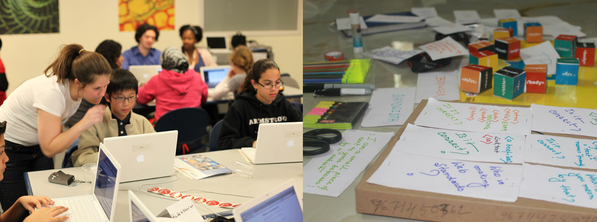

Good design should support open practices
Hive Learning Network
Visit the site
Read the blogpost
“Working with all of these different kinds of youth focused professionals who were taking risks with technology, helped the organizations to see each other as collaborators and not funding competitors. It was a very rewarding project.
”
Challenge
How might we support learning that is happening everywhere?
Engagement strategy
Work with community based organizations to develop a network of organizations (who may be a part of the same communities of interest) to take shared risks around technology.
Design strategy
Work with global open communities to create a suite of tools to recognize learning and skill development.
Solution
Acting as the initial Creative Director and working as part of the founding team with the MacArthur Foundation networks, the Hive Learning Network started out as a proof of concept in New York and Chicago in 2010. It has since become a global movement based around collaborative experimentation, leadership and risk taking. The current effort is being sheparded by the Mozilla Foundation.
“Hives are comprised of organizations (libraries, museums, schools and non-profit startups) and individuals (educators, designers, community catalysts and makers). Together, they create opportunities for youth to learn within and beyond the confines of traditional classroom experiences, design innovative practices and tools that build the field for greater impact, and contribute to their own professional development within an active community of practice.” - from the Hive Learning Network website.
Process
I worked on this when I was at the Social Science Research Council, and the project eventually got taken over by Mozilla. I helped to incubate the project by running design charrettes with cultural organizations in New York and Chicago. Eventually these charrettes produced pilot projects that informed the development of the current iteration of the network. I collaborated with organizations in various cities all over the world to localize the pilot projects and to advocate for learning networks.

These are some photos from Hackathons that were the result of teach the teacher trainings on HTML and CSS.